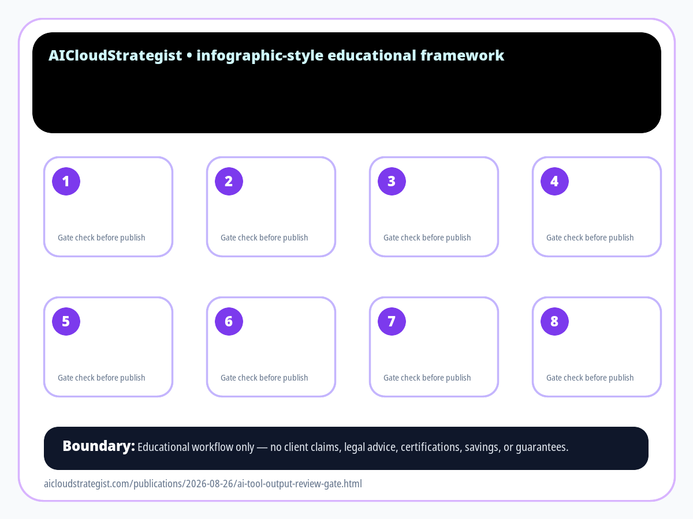

The AI Tool Output Review Gate
Before AI-generated text reaches a customer, turn it into a reviewable work item: source, risk, owner, change log, and final human decision.

Eight checks at the review gate
- Source attached — pause, inspect, and record before customer-facing use.
- Intent matched — pause, inspect, and record before customer-facing use.
- Risk labelled — pause, inspect, and record before customer-facing use.
- Facts verified — pause, inspect, and record before customer-facing use.
- Tone reviewed — pause, inspect, and record before customer-facing use.
- Owner named — pause, inspect, and record before customer-facing use.
- Decision recorded — pause, inspect, and record before customer-facing use.
- Feedback loop updated — pause, inspect, and record before customer-facing use.
AI-assisted drafts should not move directly from prompt to customer. A safer operating pattern is to pause at a review gate where the source, intended use, risk level, and final owner are visible.
Use this gate for customer-facing replies, policy explanations, public posts, vendor notes, and any message that could create confusion, promise outcomes, or expose sensitive details.
Truth boundary: this is an educational workflow checklist. It is not legal, compliance, security, financial, medical, certification, savings, ranking, or guaranteed-performance advice.
Safe-use boundary
This AICS publication is a general educational operating checklist. It does not claim customer results, legal/compliance status, certifications, rankings, savings, or guaranteed outcomes.